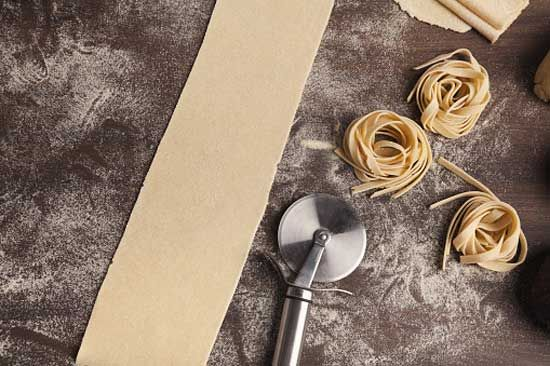
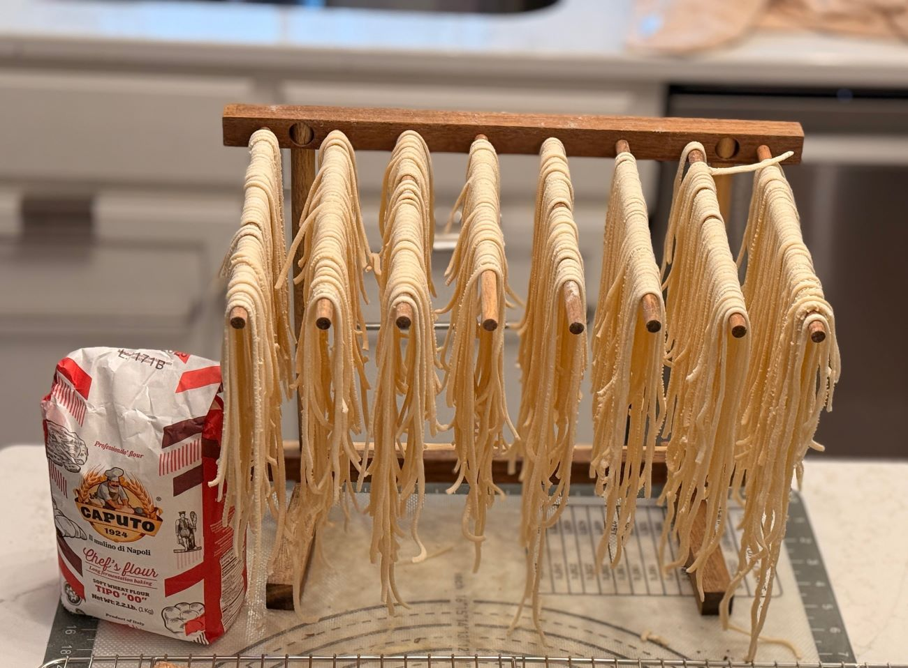
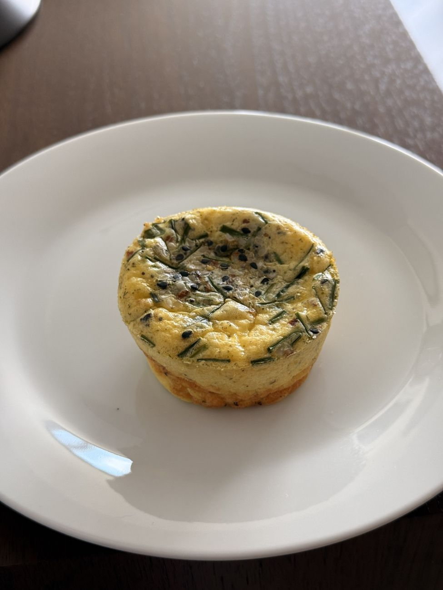

Make your own pasta at home
Learn about the types of pasta and how to make it, plus a link to a recipe for all-purpose dough
Process‑driven cooking, seasonal work, and the techniques that anchor a home kitchen.
Seasonal, ingredient-driven meals rooted in simplicity and harvest. The daily work that anchors a kitchen.

Learn about the types of pasta and how to make it, plus a link to a recipe for all-purpose dough

Preparing fresh pasta by machine the day before Christmas Eve — a grounded, process‑focused look at the work behind the meal.

SimplyFabulous: Unfussy ingredients, gorgeous color, and a depth of flavor that tastes like you spent all day on it (even though you absolutely didn’t). It’s elegant enough for guests, cozy enough for a quiet night in, and wonderfully dairy‑free without anyone noticing - Easy Peasy!

Learn what bolognese is, where it comes from, and how to make it new.

Good quality ingredients, healthy fats, Italian yum.

Discover how intuition and a few stray vegetables evolved into a velvety, smoky bisque.

An intentional morning ritual—moving past the monotony of breakfast with a high-protein, custardy profile.